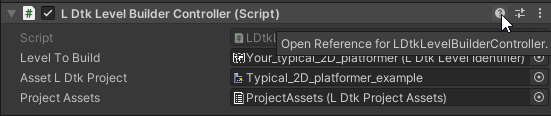

The documentation will guide you with the use of this tool to build LDtk levels just as they are in the LDtk editor.
In sections that discuss API or field injection, this guide assumes you have an understanding of C# concepts like Attributes and Interfaces.
This tool attempts to be as flexible and simple as possible, but feedback is always appreciated.
Post issues if you find any bugs or want to suggest features or ideas that offer more freedom for customization or programming.
This tool is used for simple LDtk project deserialization for the entire project and all of it's lower data structures.
However, it also provides a level building concept to build 2D levels with the goal to mimic exactly what is created in the LDtk editor.
For pixel 2D games, Using the Pixel Perfect Camera is recommended; available as a package from the Unity Package Manager.
If you get lost, all MonoBehaviours and ScriptableObjects in this package have help references available to quickly refer back to topics in this guide. (However, some may not) 